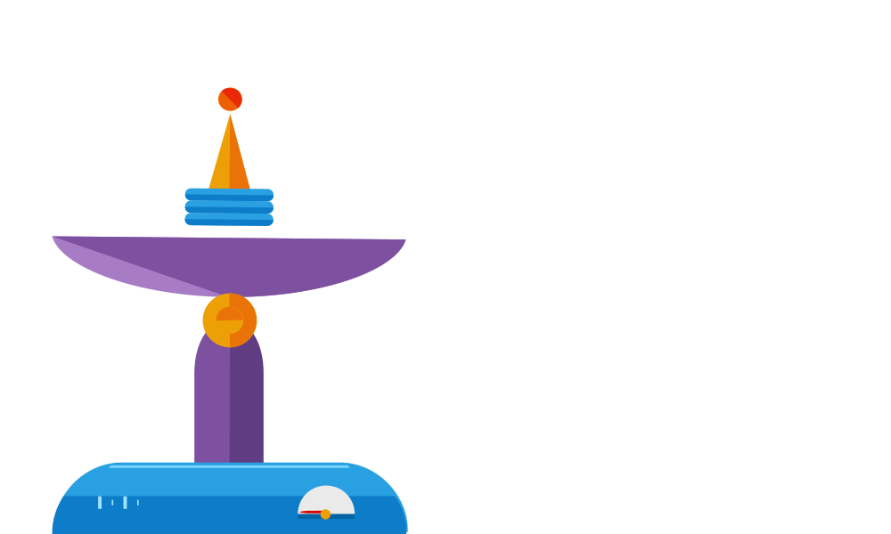
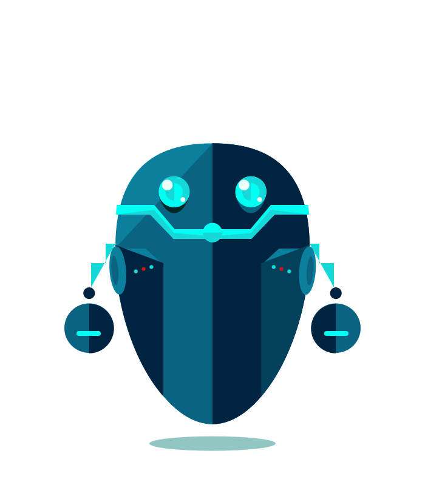
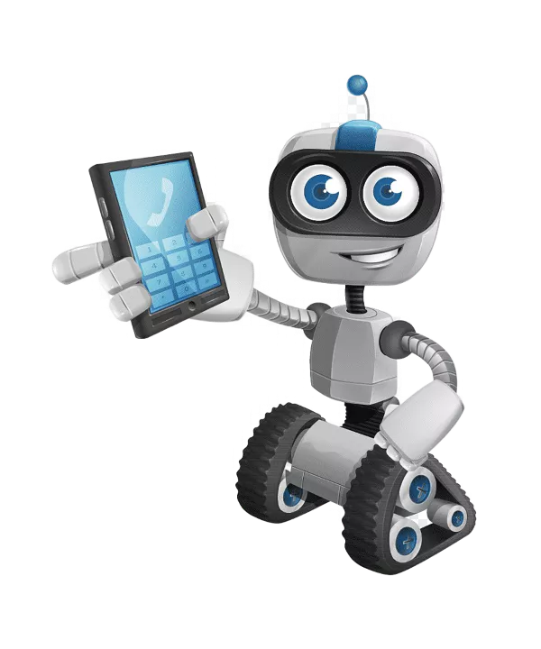

Este IA acelasi lucru cu automatizarea?
Automatizarea :
Automatizarea este o masinarie care executa o serie de
instructiuni setate exclusiv de oameni. Daca actiunea nu este
descrisa explicit in instructiune, masinaria nu o poate executa.
Cu IA, pe de alta parte, masinaria poate accepta reguli ample
prezenantate de oameni si isi poate determina propriul drum spre
success. Nu mai vorbim de faptul ca poate invata ce
functioneaza si ce nu, deci performantele sale se imbunatatesc, cu
timpul, de unul singur.
In schimb, IA se refera la cum sistemele de calculatoare pot
folosi cantitati immense de date pentru a limita inteligenta si
rationamentul uman, permitand sistemului sa invete, sa prezica si
sa recomande ce sa faca mai departe.
Capabilitatile activate de IA include procesarea limbii
natural(natural language processing – NLP), viziunea computerizata
si recunoastere faciala. Invatarea automata si invatarea profunda
( in forma unor retele neuronale) alimenteaza cel mai mult IA
sofisticata disponibila astazi.
Ce este automatizarea inteligentei artificiale?
Automatizarea poate fi folosita in tandem cu IA precum invatarea
autonoma si invatarea profunda pentru a produce rezultatea chiar
mai bune in preces ce poate fi denumit „automatizarea IA”
Automatizarea IA este puternica pentru ca ne permite sa profitam
atat de avantajele procesului de afaceri ale automatizarii –
cresterea vitezei, eficientei, economiei de timp si abilitatii de
a scala- cu perspective, flexibilitate si putere de procesarea
tehnologiei IA.
Afaceriile care folosesc automatizarea IA pot sa-si modifice
capacitatile, in timp ce descarca sarcinile repetitive pe
masinarie. Acest lucru este diferit de pura automatizare prin
faptul ca IA poate porni/opri sau chiar altera cee ace face in
functie de mediul in care opereaza.
In plus, deoarece cel mai bun sistem de IA permite marketerilor sa
stabileasca bariere, nu exsita nicio sansa ca evenimentele
neprevazute sa duca prea mult rezultatele in ratacire. Pentru
companii asta inseamna o executie si un precese mai rapide si mai
personalizate, o utilizare mai mare si o precizie mai mare a
datelor si imbunatatiri in experienta clientiilor.


Robotii ca arma de razboi :
Sunt robotii ucigasi viiorul razboiului?
Condus de evolutiile rapide ale IA, platforme de arme care pot
identifica, tinti si decide sa omoare fiinte umane pe cont
proproiu- fara un ofiter care sa conduca un atac sau un soldat
apasand pe tragaci – transforma rapid viitorul conflctului.
Oficial, acestia sunt sisteme de arme autonome letale - SAAL
(lethal autonomous weapons systems (LAWS)). Multe tari, incluzand:
SUA, China, India, Rusia etc. au investit masiv in dezvoltarea
unor astfel de arme in ultimii ani.
Dronele autonome au, de asemenea, un rol curcial in razboiul cu
Ucraina, unde atat Moscova, cat si Kievul au desfasurat aceste
arme fara echipaj pentru a tinti soldatii si infrastructura.
Castiguri si riscuri :
Cu siguranta, sistemele de arme automate conduse de IA au
beneficiul lor din punct de vedere militar.
Ei ar putea indeplini unele sarcini pe campul de razboi fara a
utiliza soldati, reducand riscul de victim. Suporterii susutin
faptul ca tehnologia sofisticata incorporate in aceste sisteme ar
putea elimina sau reduce erorile in luatul deciziilor si
eliminarea prejudecatilor. O precizie mai mare in tintire ar
putea, cel putin in teorie, sa reduca victimele umane accidentale.
Sistemele de atme autonome pot fi implementate pentru capacitate
defensive cu algoritmi de detective foarte rapizi, capabili sa
detecteze si sa elimine o potential amenintare cu o eficienta si
acuratete mai mare decat oamenii.
Si totusi, multi experti si grupuri de dreptutri, riscurile
acestor SAAL depasesc orice avantaje potentiale – variind de la
posibilitatea de defectiuni tehnice fara supraveghere a incalcalca
legile internationale si preocuparile etice asupra lipsei de
emotii a masinariilor care iau decizii de viata si de moarte.
Daca un robot comite o crima de razboi, de exemplu, ar fi
comandantul responsabil de teatrul conflictului cel care ar fi
responsabilul pentru actiuniile robotului? Sau vina ar fi celor
mai inalti care au decis sa implementeze masinaria in primul rand?
Ar fi producatorul cel tras la raspundere?

Inteligenta artificiala in viata noastra :
Azi, multe banci mari iti permit depozitarea cecurilor
folosind telefonul mobil. Poti depozita cecuri prin doar
cateva clickuri, in loc sa mergi la banca. Pe langa
precautiile evidente atunci cand utilizezi telefonul pentru a
accesa contul bancar, cecul necesita si semnatura ta.Banciile
„angajeaza” inteligenta artificiala (IA) si software de
invatare automata pentru a citi semnatura scrisa manual,
pentru a o compara cu cea pe care ai frunizat-o bancii
anteriorautorizand cecul fara risc.in general, invatarea
automata si tehnologia IA le permit calculatoarelor sa
completeze multe sarcini mult mai rapid. Drept urmare,
operatiile sunt finalizate mai efficient, timpul de asteptare
si costurile fiind reduse. IA in viata cotidiana creste pe zi
ce trece.Job-ul inginerilo IA din spatele aplicatiilor, ca
Google Maps si Waze, nu se termina niciodata. Doar imaginile
satelitilor, care sunt actualizate in fiecare secunda, pot fi
verificate de algoritmii ML dezlantuite pe ele.
Cercetatorii de la MIT au dezvoltat, de curand, o metoda de
navogatie care eticheteaza caracterisricile unui drum in harta
digital, si totul in timp real. Aceste harti digitale sunt, de
asemenea, produse simultan pe baza imaginilor satelitilor cu
informatii incorporate despre pistele de biciclete si locuri
de paracare.Retelele neuronale convultionale (Convolutional
Neural Networks (CNN)) si Retelele neuronale grafice (Graph
Neural Networks (GNN)) au ajutat la recerea schimbarilor
repetitive ale rutei. IA ajuta, de asemenea; la determinarea
rutelor pe imaginile din satelit acoperite de vegetatie in
crestere folosind modele predictive.Fiecare tara a propriul
set de reguli, dar fie sau nu ca crezi ca e o idee buna sa ai
un sistem urias de supraveghere este de dezbatut. Toti putem
fi de in dezagord cu privire la etica utilizarii unui astfel
de sistem, dar nu este nici o indoiala ca este utilizat, si IA
joca un rol important in acest sens.Pentru ca oamenii nu pot
tine pasul a milioane de monitoare in acelasi timp, IA are
logica, de vreme ce permite le permite masinariilor sa faca
acest lucru. Datorita tehnoligiei avansate, precum
recunoasterea obiectelor si a fetei, nu mai e mult pana toate
fluxire camerelor de securitate vor fi urmarite de IA, in
locul oamenilor. Cat timp IA ii va lua ceva timp pana va fi
acceptat cu totul, va devein, pana la urma, viitorul nostru.
Inteligenta artificiala (IA)
apare in cultura populara cel mai des ca un grup de roboti ce se
apleaca in a distruge umanitatea, sau, cel putin, un parc tematic
uimitor. Suntem in siguranta, deocamdata, pentru ca masinariile cu
inteligenta artificiala generala nu exista inca si nu este de
asteptat prea curând. Poti invata. Nu suntem nici pe aproape sa
traim in Westworld (film), dar asta nu face ca posibilul impact al
IA asupra viitorului nostru sa fie banal. Conform unui sondaj
recent, mai multi de 72% din americani sunt ingrijorati de faptul
ca masinariile vor face sarcini omenesti in viitor. Mai mult,
antreprenorul in tehnologie, Elon Musk, care a insistat multa
vreme pentru reglementarea guvernamentala a IA, a comparat, de
curând, IA cu armele nucleare in ceea ce priveste pericolul pe
care il prezinta. Este convenabil când ne gândim la impactul
Inteligentei Artificiale in industria 4,0, dar nu suntem inca
acolo.
